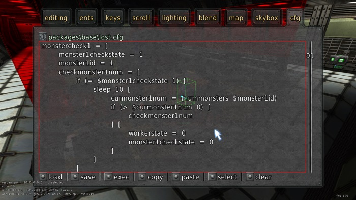

1. Introduction
1.1 Why scripting in maps is important
In order to make a game that comes with new and exciting gameplay, it is important to accelerate the creative processes that its players come up with. No matter how many ideas you develop, no matter how many improvements you make, you must be prepared for foreign ideas that you'll have never heard of. You must built structures in the game that leave space for modifications and extensions and be open-minded for new ideas.
In the past we've seen this huge amount of creativity in Sauerbraten. Unfortunately, most of these ideas that the community came up with were simply ignored, dropped or silenced by its developers, although some of them have enourmous potential! Here is a small list of good ideas that stayed unnoticed or unaccepted:
- Custom game modes such as "hide and seek"
- Full player statistics
1.2 Creating levels with Cubescript in Sauerbraten
Sauerbraten comes with a custom scripting language which is most certain satisfying to Sauerbraten, but not for us!


Most obvious disadvantages:
- Cubescript is not clearly standardized.
- It is very unknown compared to scripting languages like Javascript.
- It was designed 2002-2005 and has not been improved since.
- Safety issues may exist due to the lack of testing
- There are scripting languages with more powerful design patters. (see V8 for example)
1.3 What has been done in Inexor so far
1.4 Goals